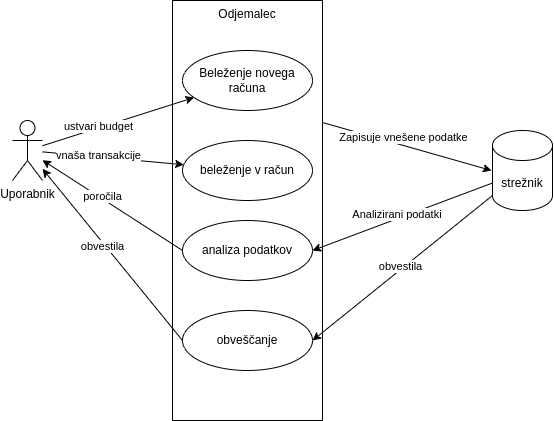

Funkcionalnosti odjemalca
1. Sledenje prihodkom in odhodkom
Opis: Uporabnik lahko vnaša svoje prihodke in odhodke v aplikacijo. Aplikacija omogoča ročno vnašanje transakcij ter avtomatsko uvoz iz bančnih računov preko API-jev.
Vhodi:
- Znesek transakcije.
- Datum transakcije.
- Kategorija transakcije (npr. hrana, transport, zabava).
- Opis transakcije (opcijsko).
Izhodi:
- Seznam vseh transakcij, razvrščenih po kategorijah.
- Grafični prikaz prihodkov in odhodkov (npr. stolpični ali tortni diagrami).
Postopek:
- Uporabnik izbere možnost "Dodaj transakcijo".
- Vnese podatke o transakciji.
- Aplikacija shrani transakcijo in jo prikaže v seznamu.
2. Avtomatska kategorizacija transakcij
Opis: Aplikacija samodejno kategorizira transakcije na podlagi preteklih vzorcev in ključnih besed v opisu transakcije.
Vhodi:
- Opis transakcije (npr. "Nakup v trgovini Mercator").
Izhodi:
- Transakcija je samodejno razvrščena v kategorijo (npr. "Hrana").
Postopek:
- Aplikacija preveri opis transakcije in jo primerja s predhodno definiranimi vzorci.
- Če je potrebno, uporabnik lahko ročno spremeni kategorijo.
3. Analiza vzorcev porabe
Opis: Aplikacija pridobi uporabniška poročila in priporočila za varčevanje od strežnika.
Vhodi:
- Zgodovina transakcij (prihodki in odhodki).
Izhodi:
- Poročilo o mesečni porabi.
- Priporočila za zmanjšanje stroškov (npr. "Preveč porabljate za restavracije, priporočamo varčevanje v tej kategoriji").
Postopek:
- Aplikacija s strežnika zahteva področja, kjer bi uporabnik lahko varčeval.
- Uporabnik prejme obvestilo s priporočili.
4. Napredno načrtovanje proračuna
Opis: Uporabnik lahko ustvari mesečni proračun na podlagi prihodkov in odhodkov. Aplikacija sledi izpolnjevanju proračuna in obvešča uporabnika o morebitnih presežkih.
Vhodi:
- Mesečni prihodki.
- Mesečni odhodki (po kategorijah).
Izhodi:
- Grafični prikaz izpolnjevanja proračuna.
- Obvestila o presežkih v določenih kategorijah.
Postopek:
- Uporabnik vnese pričakovane prihodke in odhodke.
- Aplikacija sledi dejanskim transakcijam in jih primerja s proračunom.
- Uporabnik prejme obvestila, če se približuje presežku.
5. Skupno upravljanje financ (za družine, pare, ekipe)
Opis: Uporabniki lahko ustvarijo skupne profile za upravljanje financ z družinskimi člani ali partnerji.
Vhodi:
- Dodajanje drugih uporabnikov v skupino.
- Skupne transakcije in proračuni.
Izhodi:
- Skupni pregled financ.
- Obvestila o skupnih stroških.
Postopek:
- Uporabnik doda druge uporabnike v skupino.
- Vsi člani skupine lahko vidijo skupne transakcije in proračun.
6. Obvestila in opozorila
Opis: Aplikacija pošilja obvestila o pomembnih finančnih dogodkih, kot so zapadli računi, presežki proračuna ali doseženi finančni cilji.
Vhodi:
- Zapadli računi.
- Presežki proračuna.
- Doseženi cilji.
Izhodi:
- Obvestila na zaslonu ali po e-pošti.
Postopek:
- Aplikacija spremlja finančne dogodke in pošilja obvestila.
UML diagram primerov uporabe
Spodaj je prikazan UML diagram, ki prikazuje interakcijo uporabnika z aplikacijo in različne funkcionalnosti.
